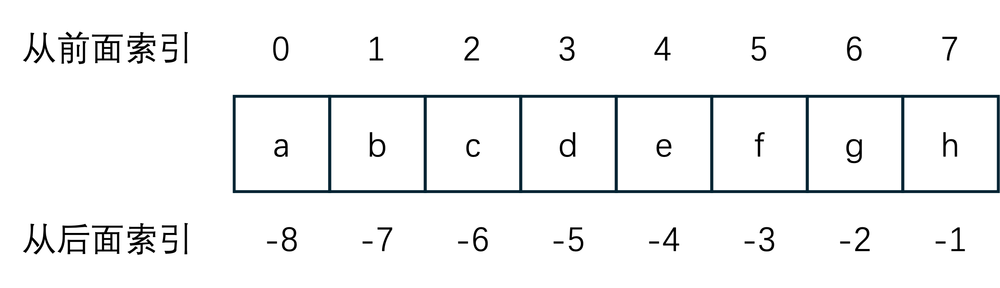

字符串
序列
序列是被排成一列的对象（或事件）；这样每个元素不是在其他元素之前，就是在其他元素之后。这里，元素之间的顺序非常重要。 在Python中，序列有字符串，列表，元组，字典，集合。
字符串
字符串或串(String)是由数字、字母、各种特殊字符组成的一串字符。一般记为 s="a1a2···an"(n>=0)。它是编程语言中表示文本的数据类型。在程序设计中，字符串（string）为符号或数值的一个连续序列，如符号串（一串字符）或二进制数字串（一串二进制数字）。
构造字符串
在Python中，以引号包围的内容均可认为是字符串：
>>> s = "jfdlasjlfewoi23u8ro23uokl"
>>> s1 = 'r32oodsalhf8oweohesalhfla'
>>> s2 = '''abcdefg
hijklmn
'''
索引和切片
可以把索引理解成每个字符在字符串中的位置，只是从前面索引时，索引值是从0开始，比如A在字符串ABCDEFGHIJ中的索引值为0， 从后面索引时，索引值从-1开始，索引的操作符为[]。

>>> s = 'abcdefghijklmn'
>>> s[0]
'a'
字符串的切片，语法格式如下：
string_name[istart:iend]
在执行切片时，Python遵循的是数学里区间的左闭右开原则，即[istart, iend), 也就是说iend位置的值取不到。
如：
>>> s = 'abcdefghijklmn'
>>> s[1:4]
'bcd'
#如果要切到最后一个索引下的值，可以让iend为空
>>> s[1:]
正向切片一定要保证istart小于iend。在切片时，可以用步频来跳跃：
>>> s = 'abcdefghijklmn'
>>> s[0:10:2]
'acegi'
逆向切片时，istart要大于iend， 并且规定步频为负数：
>>> s = 'abcdefghijklmn'
>>> s[10:0:-1]
'kjihgfedcb'
删除字符串
Python中只能完全删除字符串。
>>> del s
>>> print(s)
Traceback (most recent call last):
File "<pyshell#0>", line 1, in <module>
print(s)
NameError: name 's' is not defined
函数
| 名字 | 说明 |
|---|---|
len | 有返回值，返回字符串的长度 |
min | 有返回值，返回字符串中最小的字符 |
max | 有返回值，返回字符串中最大的字符 |
方法
| 名字 | 说明 |
|---|---|
count(s) | 有返回值，返回字符串中字符s的个数 |
join(seq) | 以指定字符串作为分隔符，将 seq 中所有的元素(的字符串表示)合并为一个新的字符串 |
split(a) | 有返回值，以a为分隔符，把字符串分隔成多个值，并生成一个列表 |
strip(a) | 有返回值，先把字符串两边的字符或者字符串s去掉后返回剩余的部分 |
格式化
str.format(),是用来格式化字符串里的内容的方法。
>>> "My name is {}, I am {}.".format("Chris",36)
'My name is Chris, I am 36.'
>>> "I have {0} pens, all are {1}".format(10, "black")
'I have 10 pens, all are black'
>>> "I have {1} pens, all are {0}".format(10, "black")
'I have black pens, all are 10'
>>> "I am living in {city}, but I was born in {addr}".format("Shanghai", "Jiangsu")
Traceback (most recent call last):
File "<pyshell#50>", line 1, in <module>
"I am living in {city}, but I was born in {addr}".format("Shanghai", "Jiangsu")
KeyError: 'city'
>>> "I am living in {city}, but I was born in {addr}".format(city="Shanghai", addr="Jiangsu")
'I am living in Shanghai, but I was born in Jiangsu'